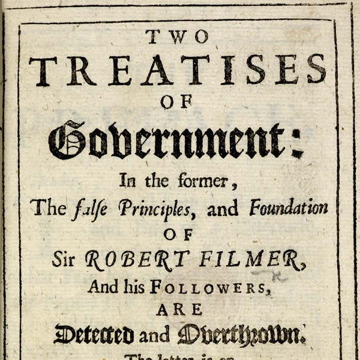

Locke’s Second Treatise
Wed., Apr. 17
In this class, we continue discussing Chapters 1–10 of Locke’s Second Treatise.
Key Concepts: Property, Consent
Readings:
required
Powerpoint Slides:
N/A yet
Class Notes:
Other Resources:
Early Modern Texts
Stanford Encyclopedia of Philosophy
Internet Encyclopedia of Philosophy